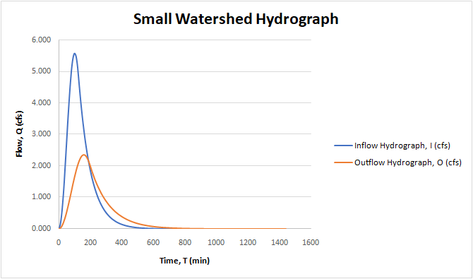
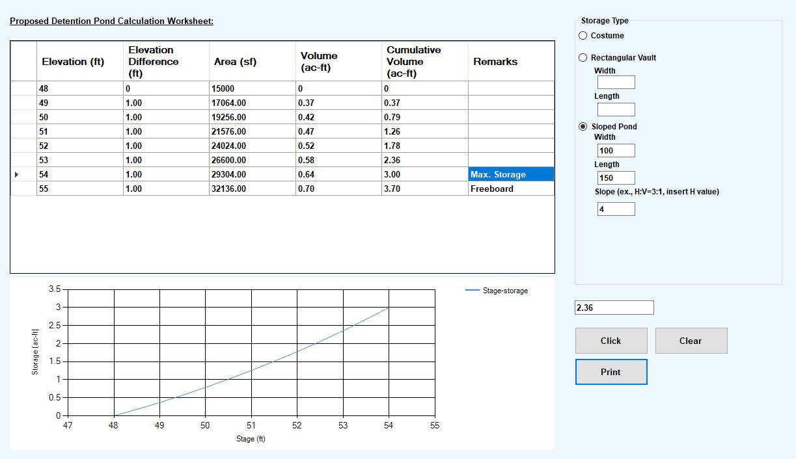

Land Development Services
Our land development services encompass comprehensive planning, design, and management of land development projects. We work closely with clients to transform raw land into functional, sustainable, and aesthetically pleasing developments that meet regulatory requirements and community needs.
Our team of experienced engineers and planners provides a full range of land development services, including site analysis, master planning, grading and drainage design, utility coordination, environmental assessments, and construction support. We leverage advanced design tools and data-driven approaches to create efficient and resilient land development solutions that optimize land use while minimizing environmental impact.
From residential subdivisions to commercial developments and mixed-use projects, we are committed to delivering innovative land development solutions that enhance the built environment and contribute to the long-term success of our clients' projects.

Small Watershed Development
Our company has extensive experience in small watershed development, providing comprehensive services that include watershed analysis, stormwater management design, erosion control planning, and environmental impact assessments. We work closely with clients to develop sustainable solutions that mitigate flooding risks, protect water quality, and enhance the ecological health of small watersheds. Our team utilizes advanced modeling tools and best practices to create effective watershed management plans that balance development needs with environmental stewardship.
Our company has developed small watershed management plans for a variety of projects, including residential subdivisions, commercial developments, and public infrastructure projects. We are committed to delivering innovative and sustainable solutions that protect natural resources while supporting responsible land development.
Our company has developed small watershed software that provides advanced modeling and analysis capabilities for small watershed management. This software allows us to simulate hydrological processes, evaluate stormwater management strategies, and optimize watershed design to mitigate flooding risks and protect water quality. By leveraging this technology, we can create more effective and sustainable watershed management plans that balance development needs with environmental stewardship.



